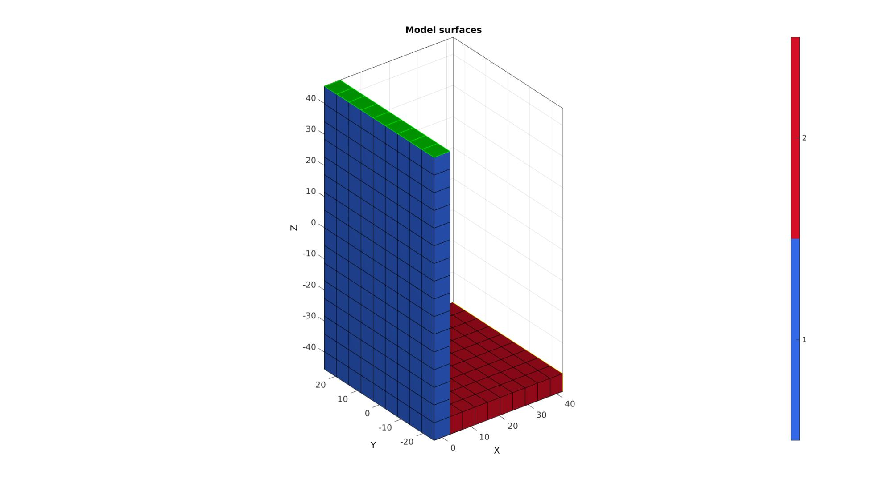
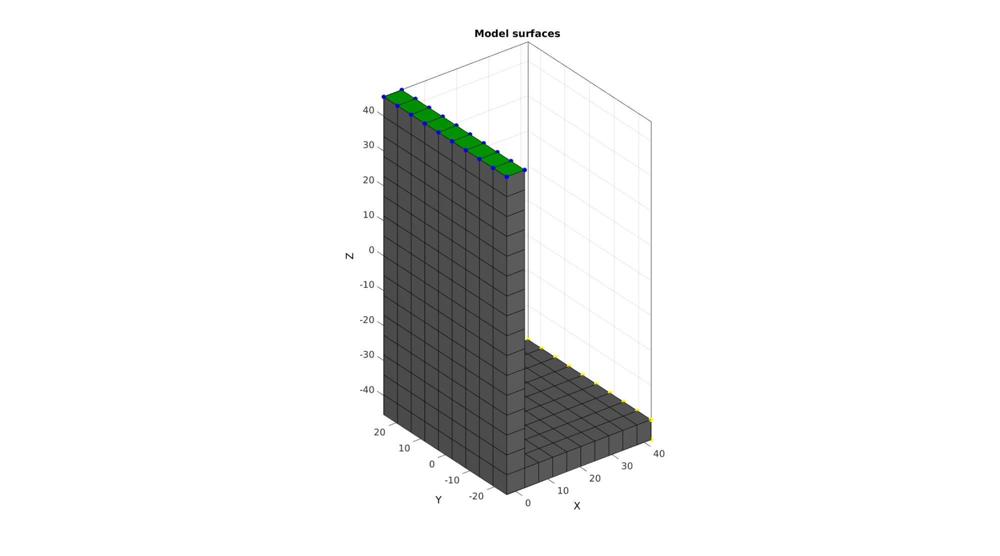
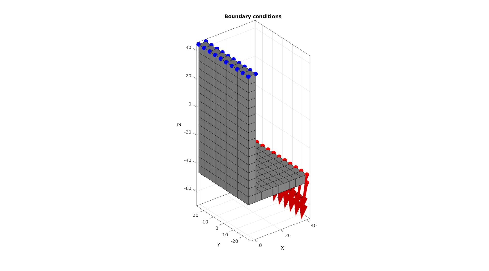
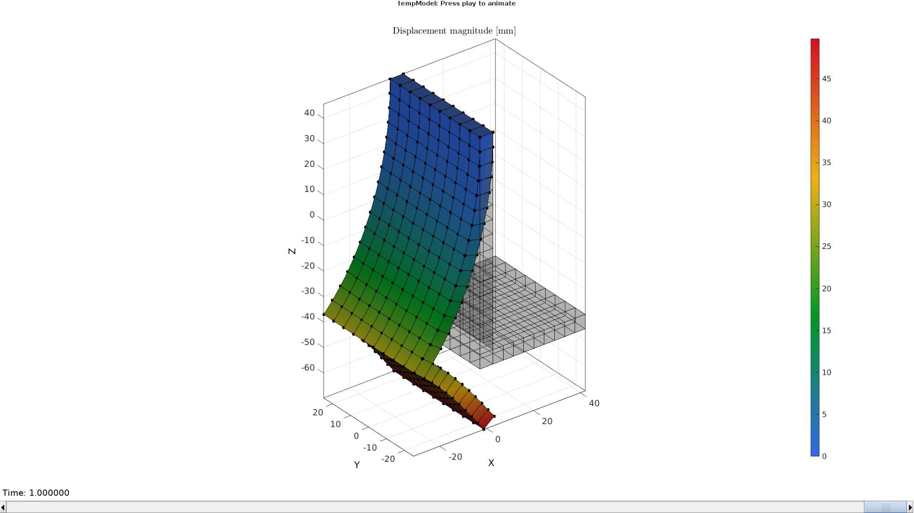
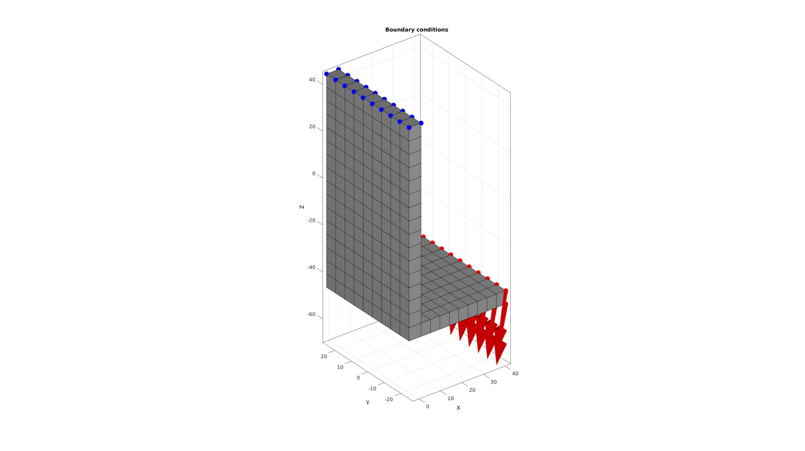
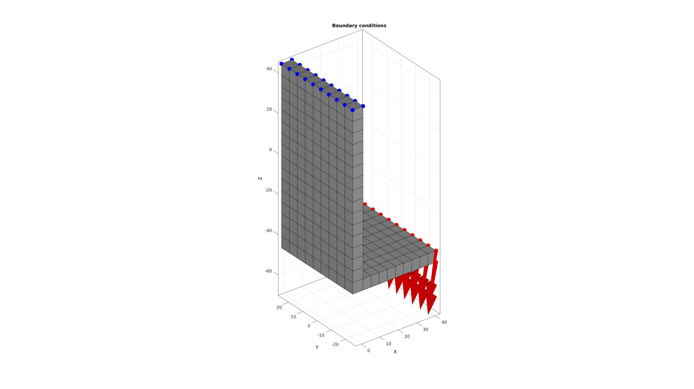
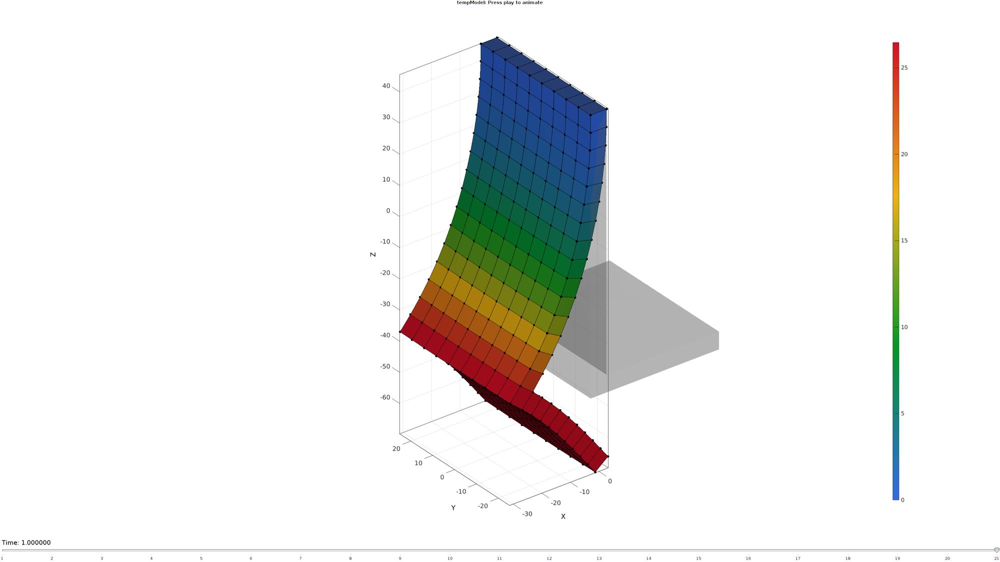

DEMO_febio_0041_beam_L_force
Below is a demonstration for:
- Building geometry for a beam with hexahedral elements
- Defining the boundary conditions
- Coding the febio structure
- Running the model
- Importing and visualizing the displacement results
Contents
- Keywords
- Control parameters
- CREATING MESHED BOX
- Make last element set "h" heigh
- Find side faces to extrude
- Merging element sets
- Refining elements
- DEFINE BC's
- Defining the FEBio input structure
- Quick viewing of the FEBio input file structure
- Exporting the FEBio input file
- Running the FEBio analysis
- Import FEBio results
Keywords
- febio_spec version 2.5
- febio, FEBio
- beam force loading
- force control boundary condition
- hexahedral elements, hex8, hex20
- beam, rectangular
- static, solid
- hyperelastic, Ogden
- displacement logfile
- stress logfile
clear; close all; clc;
Plot settings
fontSize=15; faceAlpha1=0.8; faceAlpha2=1; edgeColor=0.25*ones(1,3); edgeWidth=1.5; markerSize=50; markerSize2=20; lineWidth=3;
Control parameters
% Path names defaultFolder = fileparts(fileparts(mfilename('fullpath'))); savePath=fullfile(defaultFolder,'data','temp'); % Defining file names febioFebFileNamePart='tempModel'; febioFebFileName=fullfile(savePath,[febioFebFileNamePart,'.feb']); %FEB file name febioLogFileName=fullfile(savePath,[febioFebFileNamePart,'.txt']); %FEBio log file name febioLogFileName_disp=[febioFebFileNamePart,'_disp_out.txt']; %Log file name for exporting displacement febioLogFileName_force=[febioFebFileNamePart,'_force_out.txt']; %Log file name for exporting force %Specifying dimensions and number of elements L=85.4; h=5.6; b=50; t=45; phi=10; sampleWidth=5.6; sampleThickness=b; sampleHeight=L+h; numElementsWidth=round(sampleWidth/h); numElementsThickness=round(sampleThickness/h); numElementsHeight=round(sampleHeight/h); forceMagnitude=2800; E_youngs1=6550; % 6.55e10 Pa = 65.5 GPa = 6550 MPa v1=0.3; E_youngs2=7200; %72 Gpa = 7200 v2=0.3; nRefine=0; % FEA control settings numTimeSteps=20; %Number of time steps desired max_refs=25; %Max reforms max_ups=0; %Set to zero to use full-Newton iterations opt_iter=10; %Optimum number of iterations max_retries=5; %Maximum number of retires dtmin=(1/numTimeSteps)/100; %Minimum time step size dtmax=1/numTimeSteps; %Maximum time step size
CREATING MESHED BOX
%Create box 1 boxDim=[sampleWidth sampleThickness sampleHeight]; %Dimensions boxEl=[numElementsWidth numElementsThickness numElementsHeight]; %Number of elements [box1]=hexMeshBox(boxDim,boxEl); E=box1.E; V=box1.V; Fb=box1.Fb; Cb=box1.faceBoundaryMarker; X=V(:,1); Y=V(:,2); Z=V(:,3); VE=[mean(X(E),2) mean(Y(E),2) mean(Z(E),2)];
% Plotting boundary surfaces cFigure; hold on; title('Model surfaces','FontSize',fontSize); gpatch(Fb,V,Cb,'k',faceAlpha1); colormap(gjet(6)); icolorbar; axisGeom; camlight headlight; set(gca,'FontSize',fontSize); drawnow;
Make last element set "h" heigh
F_bottom=Fb(Cb==5,:);
logicBottomElements=any(ismember(E,F_bottom),2);
E_bottom=E(logicBottomElements,:);
[FE_bottom,~]=element2patch(E_bottom);
indV_FE_bottom=unique(FE_bottom(:));
mean_E_bottom=mean(V(indV_FE_bottom,:),1);
Z=V(:,3);
zMax=max(V(indV_FE_bottom,3));
zThreshold=zMax-(h/2);
indV_bottom=unique(F_bottom(:));
indV_bottomTop=indV_FE_bottom(V(indV_FE_bottom,3)>zThreshold);
% V(indV_bottomTop,3)=min(V(:,3))+h;
Find side faces to extrude
F_side=Fb(Cb==2,:); logicSideBottom=all(ismember(F_side,indV_FE_bottom),2); F_side_bottom=F_side(logicSideBottom,:); layerThickness=t-h; numStepsExtrude=ceil(layerThickness/h)+1; dirSet=1; [Eq,Vq,Fq_start,Fq_end]=quadThick(F_side_bottom,V,dirSet,layerThickness,numStepsExtrude); [Fq,~]=element2patch(Eq);
% Plotting boundary surfaces cFigure; hold on; title('Model surfaces','FontSize',fontSize); gpatch(Fb,V,0.5*ones(1,3),'none',0.2); % gpatch(F_bottom,V,'g','k',1); % gpatch(FE_bottom,V,'g','k',0.9); gpatch(F_side_bottom,V,'r','k',1); gpatch(Fq,Vq,'r','k',0.5);
% gpatch(Fq_start,Vq,'b','k',1); % gpatch(Fq_end,Vq,'b','k',1);
plotV(V(indV_bottom,:),'b.','MarkerSize',25); plotV(V(indV_bottomTop,:),'y.','MarkerSize',25);
plotV(Vq,'k.','MarkerSize',25);
% colormap(gjet(6)); icolorbar; axisGeom; camlight headlight; set(gca,'FontSize',fontSize); drawnow;
Merging element sets
F_top=Fb(Cb==6,:);
F_force=Fq_end;
F_force=F_force+size(V,1);
Eq=Eq+size(V,1);
elementMaterialIndices=[ones(size(E,1),1); 2*ones(size(Eq,1),1);];
E=[E;Eq];
V=[V;Vq];
[~,ind1,ind2]=unique(pround(V,5),'rows');
V=V(ind1,:);
E=ind2(E);
F_top=ind2(F_top);
F_force=ind2(F_force);
[FE,CE]=element2patch(E,elementMaterialIndices);
Plotting boundary surfaces
cFigure; hold on; title('Model surfaces','FontSize',fontSize); gpatch(FE,V,CE,'k',1); gpatch(F_force,V,'y','y',1); gpatch(F_top,V,'g','g',1); % plotV(V,'k.','MarkerSize',25); colormap(gjet(4)); icolorbar; axisGeom; camlight headlight; set(gca,'FontSize',fontSize); drawnow;
Refining elements
C=[1:1:size(E,1)]'; if nRefine>0 splitMethod=1; [E,V,C,CV]=subHex(E,V,nRefine,splitMethod); end elementMaterialIndices=elementMaterialIndices(C); [FE,CF]=element2patch(E,C); [D]=patchEdgeLengths(FE,V); indTop=find(V(:,3)>(max(V(:,3))-max(D(:))/2)); indForce=find(V(:,1)>(max(V(:,1))-max(D(:))/2)); logicTopFaces=all(ismember(FE,indTop),2); logicForceFaces=all(ismember(FE,indForce),2); F_top=FE(logicTopFaces,:); F_force=FE(logicForceFaces,:); indBoundaryFaces=tesBoundary(FE,V); Fb=FE(indBoundaryFaces,:);
Plotting boundary surfaces
cFigure; hold on; title('Model surfaces','FontSize',fontSize); gpatch(Fb,V,0.5*ones(1,3),'k',1); gpatch(F_force,V,'r','k',1); gpatch(F_top,V,'g','k',1); plotV(V(indTop,:),'b.','MarkerSize',25); plotV(V(indForce,:),'y.','MarkerSize',25); % plotV(V,'k.','MarkerSize',25); % colormap(gjet(6)); icolorbar; axisGeom; camlight headlight; set(gca,'FontSize',fontSize); drawnow;
DEFINE BC's
%Supported nodes bcSupportList=unique(F_top(:)); %Prescribed force nodes bcPrescribeList=unique(F_force(:)); numForceNodes=numel(bcPrescribeList); forceNormVec=[0 0 -1]; [R]=euler2DCM([0 phi/180*pi 0]); forceNormVec=(R*forceNormVec')'; bcPrescribedForce=(forceMagnitude.*forceNormVec)/numForceNodes;
Visualize BC's
cFigure; hold on; title('Boundary conditions','FontSize',fontSize); gpatch(Fb,V,0.75*ones(1,3),'k',1); plotV(V(bcSupportList,:),'b.','MarkerSize',markerSize); plotV(V(bcPrescribeList,:),'r.','MarkerSize',markerSize); quiverVec(V(bcPrescribeList,:),bcPrescribedForce(ones(numel(bcPrescribeList),1),:),25,'r'); axisGeom; camlight headlight; set(gca,'FontSize',fontSize); drawnow;
Defining the FEBio input structure
See also febioStructTemplate and febioStruct2xml and the FEBio user manual.
%Get a template with default settings [febio_spec]=febioStructTemplate; %febio_spec version febio_spec.ATTR.version='2.5'; %Module section febio_spec.Module.ATTR.type='solid'; %Control section febio_spec.Control.analysis.ATTR.type='static'; febio_spec.Control.time_steps=numTimeSteps; febio_spec.Control.step_size=1/numTimeSteps; febio_spec.Control.time_stepper.dtmin=dtmin; febio_spec.Control.time_stepper.dtmax=dtmax; febio_spec.Control.time_stepper.max_retries=max_retries; febio_spec.Control.time_stepper.opt_iter=opt_iter; febio_spec.Control.max_refs=max_refs; febio_spec.Control.max_ups=max_ups; %Material section febio_spec.Material.material{1}.ATTR.type='neo-Hookean'; febio_spec.Material.material{1}.ATTR.id=1; febio_spec.Material.material{1}.E=E_youngs1; febio_spec.Material.material{1}.v=v1; febio_spec.Material.material{2}.ATTR.type='neo-Hookean'; febio_spec.Material.material{2}.ATTR.id=2; febio_spec.Material.material{2}.E=E_youngs2; febio_spec.Material.material{2}.v=v2; %Geometry section % -> Nodes febio_spec.Geometry.Nodes{1}.ATTR.name='nodeSet_all'; %The node set name febio_spec.Geometry.Nodes{1}.node.ATTR.id=(1:size(V,1))'; %The node id's febio_spec.Geometry.Nodes{1}.node.VAL=V; %The nodel coordinates % -> Elements febio_spec.Geometry.Elements{1}.ATTR.type='hex8'; %Element type of this set febio_spec.Geometry.Elements{1}.ATTR.mat=1; %material index for this set febio_spec.Geometry.Elements{1}.ATTR.name='Beam_part1'; %Name of the element set febio_spec.Geometry.Elements{1}.elem.ATTR.id=(1:1:nnz(elementMaterialIndices==1))'; %Element id's febio_spec.Geometry.Elements{1}.elem.VAL=E(elementMaterialIndices==1,:); febio_spec.Geometry.Elements{2}.ATTR.type='hex8'; %Element type of this set febio_spec.Geometry.Elements{2}.ATTR.mat=2; %material index for this set febio_spec.Geometry.Elements{2}.ATTR.name='Beam_part2'; %Name of the element set febio_spec.Geometry.Elements{2}.elem.ATTR.id=nnz(elementMaterialIndices==1)+(1:1:nnz(elementMaterialIndices==2))'; %Element id's febio_spec.Geometry.Elements{2}.elem.VAL=E(elementMaterialIndices==2,:); % -> NodeSets febio_spec.Geometry.NodeSet{1}.ATTR.name='bcSupportList'; febio_spec.Geometry.NodeSet{1}.node.ATTR.id=bcSupportList(:); febio_spec.Geometry.NodeSet{2}.ATTR.name='bcPrescribeList'; febio_spec.Geometry.NodeSet{2}.node.ATTR.id=bcPrescribeList(:); %Boundary condition section % -> Fix boundary conditions febio_spec.Boundary.fix{1}.ATTR.bc='x'; febio_spec.Boundary.fix{1}.ATTR.node_set=febio_spec.Geometry.NodeSet{1}.ATTR.name; febio_spec.Boundary.fix{2}.ATTR.bc='y'; febio_spec.Boundary.fix{2}.ATTR.node_set=febio_spec.Geometry.NodeSet{1}.ATTR.name; febio_spec.Boundary.fix{3}.ATTR.bc='z'; febio_spec.Boundary.fix{3}.ATTR.node_set=febio_spec.Geometry.NodeSet{1}.ATTR.name; %Loads section % -> Prescribed nodal forces febio_spec.Loads.nodal_load{1}.ATTR.bc='x'; febio_spec.Loads.nodal_load{1}.ATTR.node_set=febio_spec.Geometry.NodeSet{2}.ATTR.name; febio_spec.Loads.nodal_load{1}.scale.ATTR.lc=1; febio_spec.Loads.nodal_load{1}.scale.VAL=1; febio_spec.Loads.nodal_load{1}.value=bcPrescribedForce(1); febio_spec.Loads.nodal_load{2}.ATTR.bc='y'; febio_spec.Loads.nodal_load{2}.ATTR.node_set=febio_spec.Geometry.NodeSet{2}.ATTR.name; febio_spec.Loads.nodal_load{2}.scale.ATTR.lc=1; febio_spec.Loads.nodal_load{2}.scale.VAL=1; febio_spec.Loads.nodal_load{2}.value=bcPrescribedForce(2); febio_spec.Loads.nodal_load{3}.ATTR.bc='z'; febio_spec.Loads.nodal_load{3}.ATTR.node_set=febio_spec.Geometry.NodeSet{2}.ATTR.name; febio_spec.Loads.nodal_load{3}.scale.ATTR.lc=1; febio_spec.Loads.nodal_load{3}.scale.VAL=1; febio_spec.Loads.nodal_load{3}.value=bcPrescribedForce(3); %Output section % -> log file febio_spec.Output.logfile.ATTR.file=febioLogFileName; febio_spec.Output.logfile.node_data{1}.ATTR.file=febioLogFileName_disp; febio_spec.Output.logfile.node_data{1}.ATTR.data='ux;uy;uz'; febio_spec.Output.logfile.node_data{1}.ATTR.delim=','; febio_spec.Output.logfile.node_data{1}.VAL=1:size(V,1); febio_spec.Output.logfile.node_data{2}.ATTR.file=febioLogFileName_force; febio_spec.Output.logfile.node_data{2}.ATTR.data='Rx;Ry;Rz'; febio_spec.Output.logfile.node_data{2}.ATTR.delim=','; febio_spec.Output.logfile.node_data{2}.VAL=1:size(V,1);
Quick viewing of the FEBio input file structure
The febView function can be used to view the xml structure in a MATLAB figure window.
febView(febio_spec); %Viewing the febio file
Exporting the FEBio input file
Exporting the febio_spec structure to an FEBio input file is done using the febioStruct2xml function.
febioStruct2xml(febio_spec,febioFebFileName); %Exporting to file and domNode
Running the FEBio analysis
To run the analysis defined by the created FEBio input file the runMonitorFEBio function is used. The input for this function is a structure defining job settings e.g. the FEBio input file name. The optional output runFlag informs the user if the analysis was run succesfully.
febioAnalysis.run_filename=febioFebFileName; %The input file name febioAnalysis.run_logname=febioLogFileName; %The name for the log file febioAnalysis.disp_on=1; %Display information on the command window febioAnalysis.disp_log_on=1; %Display convergence information in the command window febioAnalysis.runMode='external';%'internal'; febioAnalysis.t_check=0.25; %Time for checking log file (dont set too small) febioAnalysis.maxtpi=1e99; %Max analysis time febioAnalysis.maxLogCheckTime=3; %Max log file checking time [runFlag]=runMonitorFEBio(febioAnalysis);%START FEBio NOW!!!!!!!!
%%%%%%%%%%%%%%%%%%%%%%%%%%%%%%%%%%%%%%%%%%%%% --- STARTING FEBIO JOB --- 04-Jun-2019 13:16:03 Waiting for log file... Proceeding to check log file...04-Jun-2019 13:16:04 ------- converged at time : 0.05 ------- converged at time : 0.1 ------- converged at time : 0.15 ------- converged at time : 0.2 ------- converged at time : 0.25 ------- converged at time : 0.3 ------- converged at time : 0.35 ------- converged at time : 0.4 ------- converged at time : 0.45 ------- converged at time : 0.5 ------- converged at time : 0.55 ------- converged at time : 0.6 ------- converged at time : 0.65 ------- converged at time : 0.7 ------- converged at time : 0.75 ------- converged at time : 0.8 ------- converged at time : 0.85 ------- converged at time : 0.9 ------- converged at time : 0.95 ------- converged at time : 1 --- Done --- 04-Jun-2019 13:16:05
 
 Import FEBio results
if runFlag==1 %i.e. a succesful run
% Importing nodal displacements from a log file [time_mat, N_disp_mat,~]=importFEBio_logfile(fullfile(savePath,febioLogFileName_disp)); %Nodal displacements time_mat=[0; time_mat(:)]; %Time N_disp_mat=N_disp_mat(:,2:end,:); sizImport=size(N_disp_mat); sizImport(3)=sizImport(3)+1; N_disp_mat_n=zeros(sizImport); N_disp_mat_n(:,:,2:end)=N_disp_mat; N_disp_mat=N_disp_mat_n; DN=N_disp_mat(:,:,end); DN_magnitude=sqrt(sum(DN(:,3).^2,2)); V_def=V+DN; [CF]=vertexToFaceMeasure(Fb,DN_magnitude);
Plotting the simulated results using anim8 to visualize and animate deformations
% Create basic view and store graphics handle to initiate animation hf=cFigure; %Open figure gtitle([febioFebFileNamePart,': Press play to animate']); hp=gpatch(Fb,V_def,CF,'k',1); %Add graphics object to animate hp.Marker='.'; hp.MarkerSize=markerSize2; gpatch(Fb,V,0.5*ones(1,3),'none',0.25); %A static graphics object axisGeom(gca,fontSize); colormap(gjet(250)); colorbar; caxis([0 max(DN_magnitude)]); axis([min(V_def(:,1)) max(V_def(:,1)) min(V_def(:,2)) max(V_def(:,2)) min(V_def(:,3)) max(V_def(:,3))]); %Set axis limits statically camlight headlight; % Set up animation features animStruct.Time=time_mat; %The time vector for qt=1:1:size(N_disp_mat,3) %Loop over time increments DN=N_disp_mat(:,:,qt); %Current displacement DN_magnitude=sqrt(sum(DN.^2,2)); %Current displacement magnitude V_def=V+DN; %Current nodal coordinates [CF]=vertexToFaceMeasure(Fb,DN_magnitude); %Current color data to use %Set entries in animation structure animStruct.Handles{qt}=[hp hp]; %Handles of objects to animate animStruct.Props{qt}={'Vertices','CData'}; %Properties of objects to animate animStruct.Set{qt}={V_def,CF}; %Property values for to set in order to animate end anim8(hf,animStruct); %Initiate animation feature drawnow;
end

GIBBON www.gibboncode.org
Kevin Mattheus Moerman, gibbon.toolbox@gmail.com
GIBBON footer text
License: https://github.com/gibbonCode/GIBBON/blob/master/LICENSE
GIBBON: The Geometry and Image-based Bioengineering add-On. A toolbox for image segmentation, image-based modeling, meshing, and finite element analysis.
Copyright (C) 2019 Kevin Mattheus Moerman
This program is free software: you can redistribute it and/or modify it under the terms of the GNU General Public License as published by the Free Software Foundation, either version 3 of the License, or (at your option) any later version.
This program is distributed in the hope that it will be useful, but WITHOUT ANY WARRANTY; without even the implied warranty of MERCHANTABILITY or FITNESS FOR A PARTICULAR PURPOSE. See the GNU General Public License for more details.
You should have received a copy of the GNU General Public License along with this program. If not, see http://www.gnu.org/licenses/.